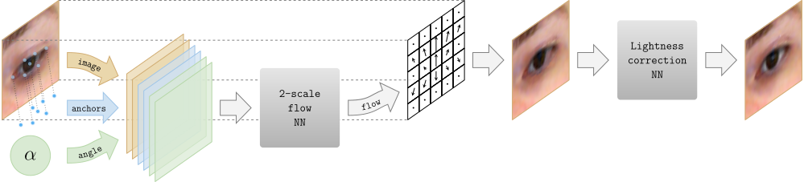

The proposed system takes an input eye region, feature points (anchors) as well as a correction angle and sends them to the multi-scale neural network predicting a flow field. The flow field is then applied to the input image to produce an image of a redirected eye. Finally, the output is enhanced by processing with the lightness correction neural network.
Links: pdf
In this work, we consider the task of generating highly-realistic images of a given face with a redirected gaze. We treat this problem as a specific instance of conditional image generation, and suggest a new deep architecture that can handle this task very well as revealed by numerical comparison with prior art and a user study. Our deep architecture performs coarse-to-fine warping with an additional intensity correction of individual pixels. All these operations are performed in a feed-forward manner, and the parameters associated with different operations are learned jointly in the end-to-end fashion. After learning, the resulting neural network can synthesize images with manipulated gaze, while the redirection angle can be selected arbitrarily from a certain range and provided as an input to the network.
Below you can find looped animations (.webm format) produced by our unified system trained simultaneously for vertical and horizontal redirection. The angle amplitude is set to +-15 degrees. Note that all of the images below were processed in the model's native scale, i.e. eye regions were cropped and resized to H x W = 41 x 51. The resulting flow field has the same spatial dimensions. In order to preserve the input image resolution, we rescale the flow to the original resolution. The training follows the procedure discussed in Section 4 (Incorporating registration) of the paper.
Below we provide screenshots of our user assessment interface. In each case, one of the four eyes was resynthesized, while the remaining three were taken from real images. Users were requested to click on the most unnatural eye image (out of four) as quickly as possible (though without imposing any hard constraints on the available time). In the examples below, the resynthesized eyes are in the bottom left and in the top right.